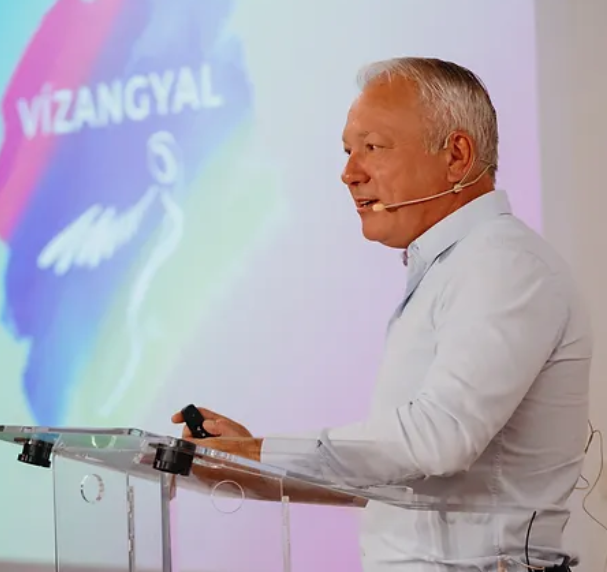
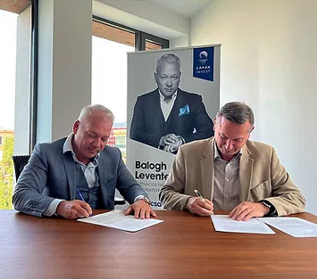
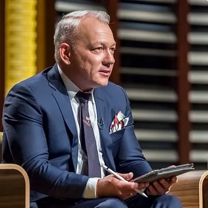

Balogh Levente mint...

Előadó
Fontosnak tartom, hogy a fiatal, vagy kezdő üzletemberek is tanulni tudjanak az én tapasztalataimból. Ezért vállalok olyan előadásokat, ahol megoszthatom másokkal a sikeres vállalkozóvá válás titkát.

Cápa - Befektető
A Cápák között befektetőjeként folyamatosan újabb és újabb vállalkozásba szállok be. Keresem az új ötleteket és az innovatív személyeket és cégeket, hogy együtt még sikeresebbé váljunk.

Üzleti tanácsadó
Az utóbbi években mások vállalkozásait is segítem mentorként és üzleti tanácsadóként. Célom, hogy szakmai tanácsaimmal a vállalkozók valódi piaci versenyelőnyre tegyenek szert.